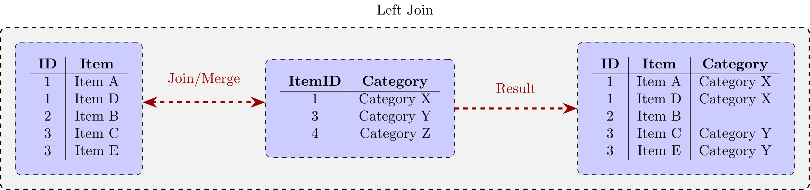
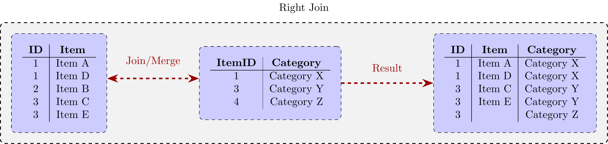
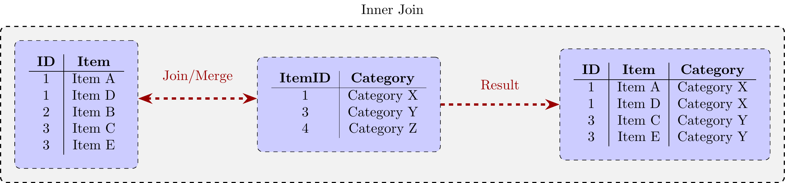
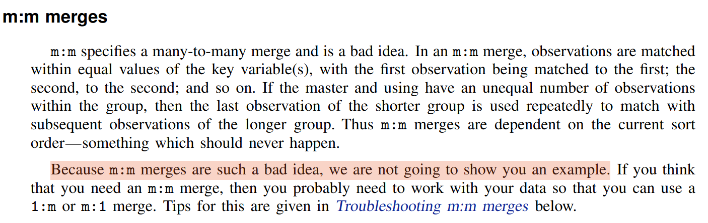
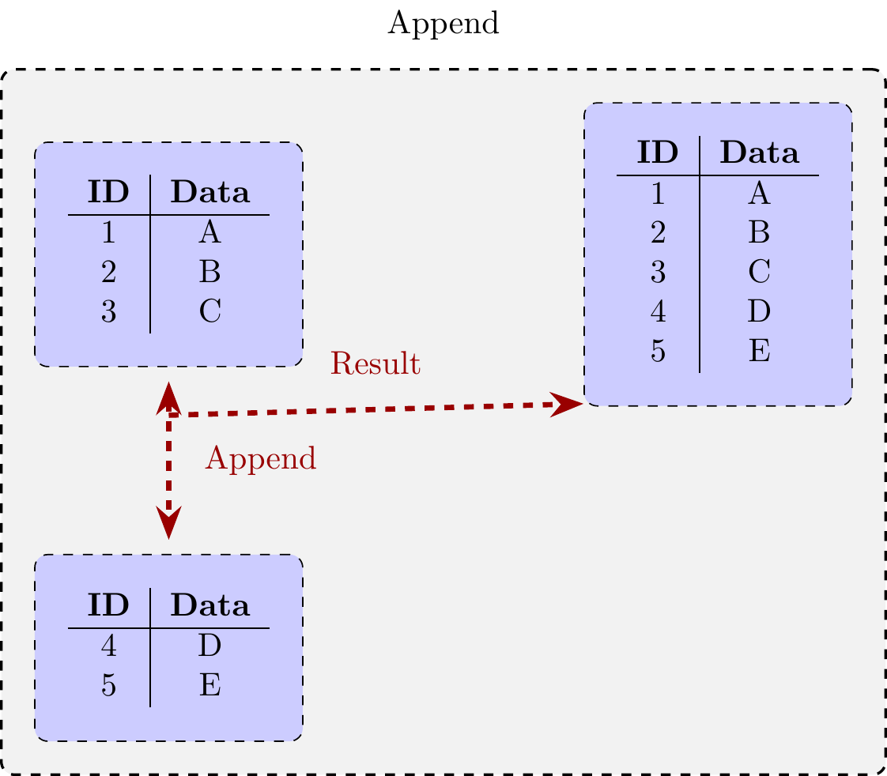
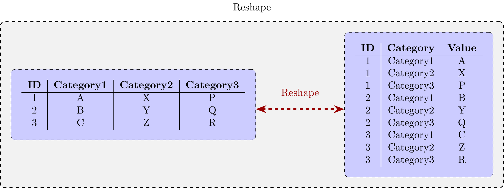
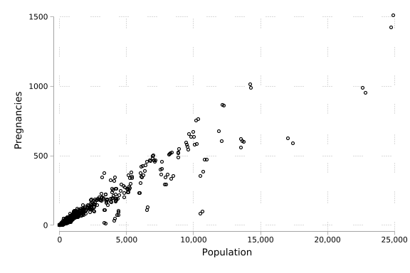
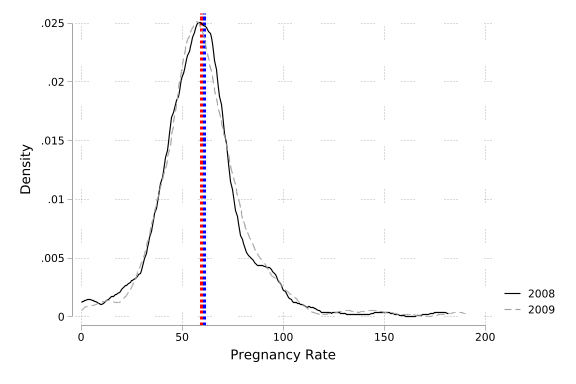

Data Wrangling and Data Management
More on “Data Wrangling”
We have briefly seen the idea behind merging, reshaping and other data preparation techniques, but will review further details here, before working with a more complete example where we will see such techniques in use in a way commonly found in research projects below.
Joining/Merging
Depending on the language used, the process of combining datasets in a row-wise fashion (ie matching within rows) is referred to as merging, or joining. In these procedures, it is fundamental for us to understand the identifiers which will be used to merge or join upon. These identifiers must allow us to uniquely identify observations, and be consistently used in both sets of data we wish to join. Identifiers may be based on a single variable (for example an individual’s national identity number), or groups of variables (for example state names, county names and years). Prior to making any merge/join, it is important to have in mind what you expect from the output, and ensure that your expected identifiers do indeed match up across data sets. It is important when conducting merges/joins to spend time to ensure that you understand the structure of your databases, and, ideally, know the exact structure you expect from the merge so you can chase down any errors that may occur when conducting the merge.
Generically there are two types of considerations when dealing with joins/merges. The first is the type of join (inner, outer, left, or right), and the second is whether you will be merging each observation in one dataset to a single observation in another data set, or whether each observation may merge to multiple observations. We will discuss these in principle below, and then see a real example where we encounter a range of situations.
Inner, Outer, Left and Right Join
In languages like Python and R, when conducting a join we will need to indicate whether the join will be one of either: Inner, Outer, Left, or Right join. An inner join refers to the case where only observations which occur in both datasets will be kept. An outer join refers to the case where any observations, whether in both data sets, or in either of the datasets to be joined, will be kept. In the language-specific syntax we will list a first file name on the left, and then a second file name on the right. Thus, of we indicate “left join”, we are telling the language that it should keep all observations that are in the data listed first, whether or not they match with an observation in the right hand dataset. Similarly, if we indicate “right join”, we are telling the language that it should keep all observations that are in the right hand data set, but not observations that are only in the left-hand data set. To see a very simple schematic example of this, refer to the four diagrams below, showing a case where the type of join will result in different outputs. Note that in each of these cases, the unique identifying key to join on is “ID”.



Unlike in Python or R, in Stata we will automatically perform an outer join. However, along with the merge, Stata will return to us a variable taking the value of 1 if the observation only exists in the left-hand (“master”) dataset, a value of 2 if the observation only exists in the right-hand (“using”) dataset, or a value of 3 if the observation exists in both datasets. Thus, if we keep observations with value of 1, 2 and 3, we are essentially conducting an outer join, if we keep observations with values of 3 we are conducting an inner join, if we keep observations with 1 and 3 we are conducting a left join, and if we keep observations with values of 2 and 3 we are conducting a right join.
1:1, m:1, or 1:m Merges
The second element we need to consider is the correspondence of observations across datasets. In Stata, we must explicitly indicate whether our merge will one of the types indicated below in the table. Note that this explanation is based on Stata’s logic where a merge is conducted between one data set (“master”) which is open in Stata, and another dataset (“using”) which is housed on the disk.
| Merge | Explanation |
|---|---|
| 1:1 | Each observation in the data set in memory matches to one observation on the disk |
| m:1 | Multiple observations in the data set in memory match to each observation on the disk |
| 1:m | Each observation in the data set in memory matches to multiple observations on the disk |
If you return to the four schematic diagrams above (Figure 7.1 to Figure 7.4) you will note that this is a “m:1” merge, because in the left-hand data set there are potentially multiple lines with each ID, and these are joined to a single line in the right-hand side data.
Whether a merge will be 1:1, m:1, or 1:m depends entirely on the setting. For example, if we are matching two datasets with one pieces of information on the same individuals (for example their ages and their educational levels), we will be in a 1:1 situation. However, if we are matching the same observations with potentially multiple pieces of information (for exaple the ages of each of their children), we would be in a 1:m situation. If we mistakenly believe we are in a 1:1 merge but Stata finds multiple lines for each identifier, it will report an error message to us, and not allow us to continue.
Unlike in Stata, R and Python will automatically match each line with a given ID from one dataset to each line with the same ID in the other dataset. Thus, we will not need to explicitly indicate whether a join is m:1, 1:1, etc., but it is of course good to know this for our own clarity of thinking!
In theory there is one more type of merge which Stata permits, which is the m:m merge. However, an m:m merge should never be performed, because it is not replicable, and doesn’t make sense. If we have multiple units with the same ID in one dataset, and multiple units with the same ID in the other dataset, Stata will simply join them based on the order the are sorted, which is likely arbitrary. The best explanation of this cames from the Stata manual itself (see Figure 7.5)!

Both R and Python have a different behaviour in this case. If we try to join datasets with multiple units with the same identified in each data file, the result will be a line for every possible join. A simple example of this can be seen below. If this is actually what we wish to do, we can do this in Stata with the joinby command. The “m:m” merge will not do this, and so should be avoided, as noted in the Stata manual above.
# Load the dplyr package
library(dplyr)
Attaching package: 'dplyr'The following objects are masked from 'package:stats':
filter, lagThe following objects are masked from 'package:base':
intersect, setdiff, setequal, union# Create two sample data frames with duplicate IDs
data1 <- data.frame(ID = c(1, 2, 2, 3, 4, 4, 5),
Name = c("Alice", "Bob", "Carl", "David", "Eve", "Frank", "Grace"))
data2 <- data.frame(ID = c(2, 2, 3, 4, 5, 5, 6),
Age = c(25, 30, 35, 40, 45, 50, 55))
# Perform an inner join on the 'ID' column
result <- inner_join(data1, data2, by = "ID")
# Print the result
print(result) ID Name Age
1 2 Bob 25
2 2 Bob 30
3 2 Carl 25
4 2 Carl 30
5 3 David 35
6 4 Eve 40
7 4 Frank 40
8 5 Grace 45
9 5 Grace 50Appending
Unlike merging/joining, in the case where we simply wish to join two datasets in a column-wise fashion is the append. Appending is conceptually much simpler, as we simply will stack two (or more) datasets one on top of the other, and any columns with the same variables will be stacked, whereas any variables which exist in one and not the other will simply be replaced with missing values when they don’t appear. A graphical representation of this process is provided below.

Given the relative simplicity of this task, commands to append are generally straightforward, consisting simply of “append”, or “concat” or “bind” or similar, along with a list of the datasets to stack. This is frequently used when we work with similar data over years and wish to join our data, as we will see in an applied example shortly.
Reshaping
Finally, in the interests of comprehensiveness, the figure below formalises the idea of reshaping data from wide format to long, or vice versa. Reshapes can work in either way, and whether we wish to work in long or wide format will depend entirely upon our processes of interest. Most cases where we wish to capture time dependence in data such as panel data methods will require data to be stored in long format (and organised by time). Again, in our applied example below we will see a real case where data is provided in wide format, and we will reshape to long format for use.

Checking your understanding
To explore a merge/join and data manipulation in practice, we will work with an example from the Demographic and Health Surveys (DHS). The DHS is a widely used household survey with a number of modules with different unique keys and relationships among themselves. The DHS Program provide a complete description of how to conduct merges.
To check your understanding of the above ideas in practice, I would suggest working with a single country (for example, you can find here the full data downloadable for the Tanzania, 2015-16 DHS). This is provided in Stata format, but if you are working in R or Python, can be read in directly using libraries we have discussed previously. If you would like to work with data from other countries, you can explore the DHS website here and make an account to download all the countries and waves that you like.
With this data, and the description of merging provided at the DHS website, explore various datasets and see if you can work out how to join them together, confirm that the data joins as you would expect, and so forth.
An Applied Example
While understanding these ideas in an abstract way is important, the best way to get comfortable with these processes, and see where they can be complicated, is by dealing with them in practice. Here we will work through an applied example to see the sorts of issues we should be aware of when setting up a research project. This applied example will use data at various levels to generate a data set by municipality and time. This data is, in a very rough way, following the application in Bentancor and Clarke (2017). In particular we will be interested in looking at rates of teenage pregnancy in Chile between the years of 2008 and 2009, and how they evolve in two types of municipalities: those where the emergency contraceptive (EC) pill became available in 2009, and those where the EC pill was not available.
While this is a simplified example, only working with two years of data, it illustrates all of the considerations which one has while working with real data collected from diverse sources. When we begin work on a “project” like this it is important for us to have clear what our goal is in terms of the final data structure, the final observation numbers we will expect, and the variables we need in our “clean” data. Then we will consider the inputs we need to arrive to this target dataset, and the type of “data wrangling” operations we will need.
In particular in this setting we wish to generate a dataset of with a single line per municipality and year, where each line contains the number of pregnancies in this municipality, the population of adolescent women, and information on whether the municipality disbursed the EC pill. Theoretically, before we start we know that our dataset should look something like the following:
| Observation | Municipality | Year | TeenPreg | ECPill | Population |
|---|---|---|---|---|---|
| 1 | Algarrobo | 2008 | xx | xx | xxxx |
| 2 | Algarrobo | 2009 | xx | xx | xxxx |
| 3 | Alhué | 2008 | xx | xx | xxxx |
| 4 | Alhué | 2009 | xx | xx | xxxx |
| … | … | … | … | … | … |
| (\(N_m\times 2)-1\) | Ñuñoa | 2008 | xx | xx | xxxx |
| (\(N_m\times 2)\) | Ñuñoa | 2009 | xx | xx | xxxx |
While it does not matter exactly what the municipalities are called, what we can see here is that we want to generate a dataset where each municipality is listed two times: once for 2008 and once for 2009, and hence we know that there will be the number of municipalities (\(N_m\)) observations times 2 (one municipality for each year). It is very important for us to have this theoretical structure in mind, and this is something I would highly encourage you to do when you are conducting such analyses, as before we start we should know exactly what our observations are, and have an idea of the final dataset which we will be satisfied with. This way, if we eventually turn out to not have the observations that we think we should, we can go back and debug our code to find out where errors may have occurred. In this particular setting, if we look online, we could see that Chile has \(N_m=346\) municipalities, which tells us that eventually, when we have completed our work we should have \(346\times 2=692\) observations.
After having this precise data output in mind, we should work out what data sources we have (or can collect) which let us build this, as well as the structure of the data that we have available. In this particular case, we need to generate three variables:
- Teenage Pregnancy: This can be generated from publicly available microdata files on each birth occurring in the country where we observe the age of the mother at birth.
- EC pill: This can be generated from a survey conducted by legal scholars indicating whether the EC pill was available in each municipality in 2009.
- Population: The National Statistics Institute of the country provides an excel file where each municipality has a line for each age and gender with the population in each year from 2002-2020.
All of these datasets can be downloaded from the following link, and with this you can follow along with our example here.
We will explore this example in Stata. I would encourage you to ensure that you can “translate” this process into the language that you are working with. To start we will write a Stata do file clearing memory, indicating the version of Stata’s commands which we are using (to ensure backwards compatibility), and setting “global variables” which list the directories we will be working in. Finally, we will open a log file which stores all the output of all our commands.
vers 12
clear all
set more off
cap log close
*-------------------------------------------------------------------------------
*--- (1) Set any global/local variables
*-------------------------------------------------------------------------------
global ROOT "/media/damian/DCC-0003/"
global DAT "$ROOT/trabajo/Teaching/Exeter/ResearchMethods-I/site"
global OUT "$ROOT/trabajo/Teaching/Exeter/ResearchMethods-I/site"
*-------------------------------------------------------------------------------
*--- (2) Log output
*-------------------------------------------------------------------------------
log using "$OUT/analisisTeenPreg.txt", text replace(file
/media/damian/DCC-0003//trabajo/Teaching/Exeter/ResearchMethods-I/site/an
> alisisTeenPreg.txt not found)
file
/media/damian/DCC-0003//trabajo/Teaching/Exeter/ResearchMethods-I/site/an
> alisisTeenPreg.txt could not be opened
r(603);
end of do-file
r(603);Above, the “global variables” we define in lines 9-10 can be referred to later in the code using a $ sign, followed by the name we have given them (ie $DAT or $OUT). Defining global variables at the top of the file like this is good practice, as if we share our code with others, they can just change these lines and nothing else.
We will now begin the work of setting up our data. When doing this, we begin with the population data, because this way we are sure to observe a single line for each municipality and year. If, on the other hand, we start with birth data, we may encounter difficulties if there are certain small municipalities where no births occur.
*-------------------------------------------------------------------------------
*--- (2) Create the population structure for the data
*--- Goal: 1 line for each municipalit in 08 and 20 with totals 15-19 F
*-------------------------------------------------------------------------------
import excel poblacionINE, firstrow clear
dis "What does 1 line of the raw population data look like?"
list in 1
//Keep data for female teenagers only
keep if Sexo==2 & edad>=15&edad<=19
//Keep relevant variables (population for 2008-2009 only)
keep Comuna nombre_comuna a2008 a2009 edad
//We must reshape so that we have a line for population in each year
reshape long a, i(Comuna nombre_comuna edad) j(ano_nac)
dis "What does our reshaped clean data look like?"
list in 1/5
//Now collapse to sum populations across each age group within a municipality*yr
collapse (sum) a, by(Comuna nombre_comuna ano_nac)
rename a population
rename Comuna comuna
dis "What does our collapsed data look like?"
count
list in 1/4
list in -2/l
dis ":-)"
//We save this as a "tempfile" for use below
tempfile population
save `population'(27 vars, 56,052 obs)
What does 1 line of the raw population data look like?
+-----------------------------------------------------------------------+
1. | Region | nombre_re~n | provin~a | Nombre~a | Comuna | nombre~a |
| 1 | I Tarapacá | 11 | Iquique | 1,101 | Iquique |
|-----------------------------------------------------------------------|
| Sexo1h~s | edad | a2002 | a2003 | a2004 | a2005 | a2006 | a2007 |
| 1 | 0 | 1,468 | 1,422 | 1,427 | 1,455 | 1,475 | 1,484 |
|-----------------------------------------------------------------------|
| a2008 | a2009 | a2010 | a2011 | a2012 | a2013 | a2014 | a2015 | a2016 |
| 1,524 | 1,594 | 1,595 | 1,566 | 1,561 | 1,545 | 1,538 | 1,529 | 1,511 |
|-----------------------------------------------------------------------|
| a2017 | a2018 | a2019 | a2020 |
| 1,476 | 1,442 | 1,405 | 1,367 |
+-----------------------------------------------------------------------+
(54,322 observations deleted)
(j = 2008 2009)
Data Wide -> Long
-----------------------------------------------------------------------------
Number of observations 1,730 -> 3,460
Number of variables 5 -> 5
j variable (2 values) -> ano_nac
xij variables:
a2008 a2009 -> a
-----------------------------------------------------------------------------
What does our reshaped clean data look like?
+--------------------------------------------+
| Comuna nombre~a edad ano_nac a |
|--------------------------------------------|
1. | 1,101 Iquique 15 2008 1,550 |
2. | 1,101 Iquique 15 2009 1,540 |
3. | 1,101 Iquique 16 2008 1,492 |
4. | 1,101 Iquique 16 2009 1,477 |
5. | 1,101 Iquique 17 2008 1,497 |
+--------------------------------------------+
What does our collapsed data look like?
692
+---------------------------------------------+
| comuna nombre_comuna ano_nac popula~n |
|---------------------------------------------|
1. | 1,101 Iquique 2008 7,657 |
2. | 1,101 Iquique 2009 7,631 |
3. | 1,107 Alto Hospicio 2008 3,155 |
4. | 1,107 Alto Hospicio 2009 3,321 |
+---------------------------------------------+
+---------------------------------------------+
| comuna nombre_comuna ano_nac popula~n |
|---------------------------------------------|
691. | 15,202 General Lagos 2008 19 |
692. | 15,202 General Lagos 2009 18 |
+---------------------------------------------+
:-)
file /tmp/St28913.000001 saved as .dta formatWe have done quite a lot here, and it is worth spending time looking into each line carefully. Processes such as reshaping and collapsing early in projects are key, and it is important to understand that each line does what we think it should. We will work through this line by line in class! A key thing to note is that here we have started with data that had the informatin we wanted (population), but not in the format we wanted, and by doing some data wrangling, have perfectly converted it into a format which is the format we need (692 lines covering 346 municipalities over 2 years).
Now, we will work with our birth micro-data, to generate a single line for each municipality and year:
*-------------------------------------------------------------------------------
*--- (2a) Import births data and collapse to the municipal level
*-------------------------------------------------------------------------------
// Read in 2008 microdata of births
import delimited NAC2008.csv, delim(",")
count
// Save as dta to append to 2009 (could also use a tempfile)
lab dat "All births 2008 from DEIS"
save NAC2008.dta, replace
// Read in 2009 microdata of births
import delimited NAC2009.csv, delim(",") clear
count
// Append 2008 data so we now have all births
append using NAC2008
// Generate an indicator if a birth occurs to a teen mother
gen teenPreg = 1 if edad_m>=15 & edad_m<=19
// Collapse by municipality and year to generate counts
collapse (sum) teenPreg, by(comuna ano_nac)
sum teenPreg
dis "What has happened here? Should we be worried?"
list in 1/4
list in -2/l(encoding automatically selected: ISO-8859-1)
(31 vars, 246,581 obs)
246,581
file NAC2008.dta saved
(encoding automatically selected: ISO-8859-1)
(31 vars, 252,240 obs)
252,240
(419,292 missing values generated)
Variable | Obs Mean Std. dev. Min Max
-------------+---------------------------------------------------------
teenPreg | 688 115.5945 178.1329 0 1509
What has happened here? Should we be worried?
+-----------------------------+
| ano_nac comuna teenPreg |
|-----------------------------|
1. | 2008 1101 406 |
2. | 2009 1101 459 |
3. | 2008 1107 345 |
4. | 2009 1107 373 |
+-----------------------------+
+-----------------------------+
| ano_nac comuna teenPreg |
|-----------------------------|
687. | 2008 15202 0 |
688. | 2009 15202 0 |
+-----------------------------+Again, using a few data wrangling processes, we now have data in the format we wish. Again, we will talk through line by line in class to ensure that we are happy with how we convert our 500,000 or so births into a data set with a line for each municipality and year. It is also important for us to think why we do not have the full 692 lines we may have expected.
While this above process is perfectly appropriate, at times we may prefer not to store large amounts of data in memory. Below we conduct exactly the same process, but do it in a slightly more memory-efficient way. While concerns about memory should come after concerns about code being correct, in data-heavy tasks it is worth thinking if we can break up our work into pieces which let us read less data into memory at a single time.
*-------------------------------------------------------------------------------
*--- (2b) Import births data and collapse to the municip level (more efficient)
*-------------------------------------------------------------------------------
use NAC2008.dta, clear
gen teenPreg = 1 if edad_m>=15 & edad_m<=19
collapse (sum) teenPreg, by(comuna ano_nac)
lab dat "Births to mothers aged 15-19, 2008 (from DEIS microdata)"
tempfile teenPreg2008
save `teenPreg2008'
import delimited NAC2009.csv, delim(",") clear
gen teenPreg = 1 if edad_m>=15 & edad_m<=19
collapse (sum) teenPreg, by(comuna ano_nac)
append using `teenPreg2008'
sum teenPreg
lab data "Births to Mothers Aged 2008-2009 (from DEIS microdata)"
save embarazoAdolescente_2008_2009.dta, replace(All births 2008 from DEIS)
(206,679 missing values generated)
file /tmp/St29038.000001 saved as .dta format
(encoding automatically selected: ISO-8859-1)
(31 vars, 252,240 obs)
(212,613 missing values generated)
Variable | Obs Mean Std. dev. Min Max
-------------+---------------------------------------------------------
teenPreg | 688 115.5945 178.1329 0 1509
file embarazoAdolescente_2008_2009.dta savedNow, finally, we can do our first merge. Below we will use the comuna variable which is a unique municipality code in Chile. We know that each of our datasets has at most a single line per comuna and year, and so in this way we can confidently use a 1:1 merge, matching on comuna and ano_nac (year).
*-------------------------------------------------------------------------------
*--- (3) Merge in population data
*-------------------------------------------------------------------------------
merge 1:1 comuna ano_nac using `population' Result Number of obs
-----------------------------------------
Not matched 20
from master 8 (_merge==1)
from using 12 (_merge==2)
Matched 680 (_merge==3)
-----------------------------------------
+---------------------------------------------------+
| ano_nac comuna teenPreg nombre~a popula~n |
|---------------------------------------------------|
90. | 2008 5106 232 . |
91. | 2009 5106 230 . |
94. | 2008 5108 230 . |
95. | 2009 5108 204 . |
126. | 2008 5505 112 . |
|---------------------------------------------------|
127. | 2009 5505 111 . |
130. | 2008 5507 40 . |
131. | 2009 5507 43 . |
+---------------------------------------------------+
+-------------------------------------------------------------------+
| ano_nac comuna teenPreg nombre_comuna popula~n |
|-------------------------------------------------------------------|
689. | 2009 2202 . Ollagüe 6 |
690. | 2008 5801 . Quilpué 5,986 |
691. | 2009 5801 . Quilpué 5,961 |
692. | 2008 5802 . Limache 1,719 |
693. | 2009 5802 . Limache 1,699 |
|-------------------------------------------------------------------|
694. | 2008 5803 . Olmué 616 |
695. | 2009 5803 . Olmué 607 |
696. | 2008 5804 . Villa Alemana 4,815 |
697. | 2009 5804 . Villa Alemana 4,841 |
698. | 2008 12103 . Río Verde 1 |
|-------------------------------------------------------------------|
699. | 2009 12103 . Río Verde 1 |
700. | 2008 12303 . Timaukel 0 |
+-------------------------------------------------------------------+Unfortunately, our first merge has not worked entirely as we’d hoped. Specifically, there were 20 observations which did not merge. 8 of these were from our master database (births) and 12 of these were from our using database (populations). If we look into this data carefully, we can see that in the “using” data 4 of these observations are municipalities with very small populations (0, 1 and 6 teens), where it is conceivable that no teen births occurred. However, 8 of the observations are larger municipalities, and are missing in both years. It turns out that if we read online, we will see that Chile has changed its municipality codes a number of times, and these particular municipality codes in the birth data are the old codes, with the new codes listed in the population data. Such processes occur with some frequency in administrative datasets, pointing to the importance of understanding the contexts we are working in. The correspondence between old and new municipality codes is below.
| Municipality | Old Code | New Code |
|---|---|---|
| Quilpué | 5106 | 5801 |
| Villa Alemana | 5108 | 5804 |
| Limache | 5505 | 5802 |
| Olmué | 5507 | 5803 |
Now we can update these codes correctly in our data, and confirm that the merge occurs correctly:
*-------------------------------------------------------------------------------
*--- (2b) Import births data and collapse to the municip level (more efficient)
*-------------------------------------------------------------------------------
use NAC2008.dta, clear
gen teenPreg = 1 if edad_m>=15 & edad_m<=19
collapse (sum) teenPreg, by(comuna ano_nac)
tempfile teenPreg2008
save `teenPreg2008'
import delimited NAC2009.csv, delim(",") clear
gen teenPreg = 1 if edad_m>=15 & edad_m<=19
collapse (sum) teenPreg, by(comuna ano_nac)
append using `teenPreg2008'
replace comuna=5801 if comuna==5106
replace comuna=5802 if comuna==5505
replace comuna=5803 if comuna==5507
replace comuna=5804 if comuna==5108
lab data "Births to Mothers Aged 2008-2009 (from DEIS microdata)"
save embarazoAdolescente_2008_2009.dta, replace
*-------------------------------------------------------------------------------
*--- (3) Merge in population data
*-------------------------------------------------------------------------------
merge 1:1 comuna ano_nac using `population'
list ano_nac comuna teenPreg nombre_comuna population if _merge==1
drop _merge
lab data "Births to Mothers Aged 2008-2009 and Teen Populations"(All births 2008 from DEIS)
(206,679 missing values generated)
file /tmp/St29151.000002 saved as .dta format
(encoding automatically selected: ISO-8859-1)
(31 vars, 252,240 obs)
(212,613 missing values generated)
(2 real changes made)
(2 real changes made)
(2 real changes made)
(2 real changes made)
file embarazoAdolescente_2008_2009.dta saved
Result Number of obs
-----------------------------------------
Not matched 4
from master 0 (_merge==1)
from using 4 (_merge==2)
Matched 688 (_merge==3)
-----------------------------------------
file pregnancyPopulation.dta savedThis time we see that we have correctly conducted our merge, and effectively want to keep the observations where _merge==3 (municipalities with population and birth data), and those where _merge==2 (municipalities without birth data, likely because no births occurred this year). Later we must ensure that we replace these observations as having 0 teen births.
Finally, we will merge in data on the EC pill. In this case we are now in the presence of a m:1 merge. This is because we have two lines for each municipality (2008 and 2009), and our EC pill data has only one line (whether the municipality eventually provided the medication in 2009).
*-------------------------------------------------------------------------------
*--- (4) Merge in information on the EC pill with information on teen pregnancy
*-------------------------------------------------------------------------------
merge m:1 comuna using PAE
list if _merge==1
list if _merge==2 Result Number of obs
-----------------------------------------
Not matched 16
from master 12 (_merge==1)
from using 4 (_merge==2)
Matched 680 (_merge==3)
-----------------------------------------
+-------------------------------------------------------------------+
149. | ano_nac | comuna | teenPreg | nombre_comuna | popula~n |
| 2009 | 5801 | 230 | Quilpué | 5,961 |
|-------------------------------------------------------------------|
| comuna~e | year | pill | codcom18 | comuna~l | _merge |
| | . | . | . | | Master only (1) |
+-------------------------------------------------------------------+
+-------------------------------------------------------------------+
150. | ano_nac | comuna | teenPreg | nombre_comuna | popula~n |
| 2008 | 5801 | 232 | Quilpué | 5,986 |
|-------------------------------------------------------------------|
| comuna~e | year | pill | codcom18 | comuna~l | _merge |
| | . | . | . | | Master only (1) |
+-------------------------------------------------------------------+
+-------------------------------------------------------------------+
151. | ano_nac | comuna | teenPreg | nombre_comuna | popula~n |
| 2009 | 5802 | 111 | Limache | 1,699 |
|-------------------------------------------------------------------|
| comuna~e | year | pill | codcom18 | comuna~l | _merge |
| | . | . | . | | Master only (1) |
+-------------------------------------------------------------------+
+-------------------------------------------------------------------+
152. | ano_nac | comuna | teenPreg | nombre_comuna | popula~n |
| 2008 | 5802 | 112 | Limache | 1,719 |
|-------------------------------------------------------------------|
| comuna~e | year | pill | codcom18 | comuna~l | _merge |
| | . | . | . | | Master only (1) |
+-------------------------------------------------------------------+
+-------------------------------------------------------------------+
153. | ano_nac | comuna | teenPreg | nombre_comuna | popula~n |
| 2009 | 5803 | 43 | Olmué | 607 |
|-------------------------------------------------------------------|
| comuna~e | year | pill | codcom18 | comuna~l | _merge |
| | . | . | . | | Master only (1) |
+-------------------------------------------------------------------+
+-------------------------------------------------------------------+
154. | ano_nac | comuna | teenPreg | nombre_comuna | popula~n |
| 2008 | 5803 | 40 | Olmué | 616 |
|-------------------------------------------------------------------|
| comuna~e | year | pill | codcom18 | comuna~l | _merge |
| | . | . | . | | Master only (1) |
+-------------------------------------------------------------------+
+-------------------------------------------------------------------+
155. | ano_nac | comuna | teenPreg | nombre_comuna | popula~n |
| 2008 | 5804 | 230 | Villa Alemana | 4,815 |
|-------------------------------------------------------------------|
| comuna~e | year | pill | codcom18 | comuna~l | _merge |
| | . | . | . | | Master only (1) |
+-------------------------------------------------------------------+
+-------------------------------------------------------------------+
156. | ano_nac | comuna | teenPreg | nombre_comuna | popula~n |
| 2009 | 5804 | 204 | Villa Alemana | 4,841 |
|-------------------------------------------------------------------|
| comuna~e | year | pill | codcom18 | comuna~l | _merge |
| | . | . | . | | Master only (1) |
+-------------------------------------------------------------------+
+-------------------------------------------------------------------+
545. | ano_nac | comuna | teenPreg | nombre_comuna | popula~n |
| 2009 | 12202 | 0 | Antártica | 0 |
|-------------------------------------------------------------------|
| comuna~e | year | pill | codcom18 | comuna~l | _merge |
| | . | . | . | | Master only (1) |
+-------------------------------------------------------------------+
+-------------------------------------------------------------------+
546. | ano_nac | comuna | teenPreg | nombre_comuna | popula~n |
| 2008 | 12202 | 3 | Antártica | 0 |
|-------------------------------------------------------------------|
| comuna~e | year | pill | codcom18 | comuna~l | _merge |
| | . | . | . | | Master only (1) |
+-------------------------------------------------------------------+
+-------------------------------------------------------------------+
567. | ano_nac | comuna | teenPreg | nombre_comuna | popula~n |
| 2009 | 13106 | 236 | Estación Central | 5,090 |
|-------------------------------------------------------------------|
| comuna~e | year | pill | codcom18 | comuna~l | _merge |
| | . | . | . | | Master only (1) |
+-------------------------------------------------------------------+
+-------------------------------------------------------------------+
568. | ano_nac | comuna | teenPreg | nombre_comuna | popula~n |
| 2008 | 13106 | 279 | Estación Central | 5,191 |
|-------------------------------------------------------------------|
| comuna~e | year | pill | codcom18 | comuna~l | _merge |
| | . | . | . | | Master only (1) |
+-------------------------------------------------------------------+
+-------------------------------------------------------------------+
693. | ano_nac | comuna | teenPreg | nombre~a | popula~n | comunaname |
| . | 5106 | . | | . | Quilpué |
|-------------------------------------------------------------------|
| year | pill | codcom18 | comuna_minsal | _merge |
| 2009 | 0 | 5801 | Quilpué | Using only (2) |
+-------------------------------------------------------------------+
+-------------------------------------------------------------------+
694. | ano_nac | comuna | teenPreg | nombre~a | popula~n | comunaname |
| . | 5108 | . | | . | Villa Alemana |
|-------------------------------------------------------------------|
| year | pill | codcom18 | comuna_minsal | _merge |
| 2009 | 0 | 5804 | Villa Alemana | Using only (2) |
+-------------------------------------------------------------------+
+-------------------------------------------------------------------+
695. | ano_nac | comuna | teenPreg | nombre~a | popula~n | comunaname |
| . | 5505 | . | | . | Limache |
|-------------------------------------------------------------------|
| year | pill | codcom18 | comuna_minsal | _merge |
| 2009 | 0 | 5802 | Limache | Using only (2) |
+-------------------------------------------------------------------+
+-------------------------------------------------------------------+
696. | ano_nac | comuna | teenPreg | nombre~a | popula~n | comunaname |
| . | 5507 | . | | . | Olmué |
|-------------------------------------------------------------------|
| year | pill | codcom18 | comuna_minsal | _merge |
| 2009 | 0 | 5803 | Olmué | Using only (2) |
+-------------------------------------------------------------------+Once again here we have seen that our merge has not worked exactly like we thought, but we now have an idea why this is the case. Inspecting our problematic observations which did not merge, we once again see that we have encountered the changing municipality numbers which is now simple to correct.
*-------------------------------------------------------------------------------
*--- (4) Merge in information on the EC pill with information on teen pregnancy
*-------------------------------------------------------------------------------
use PAE
replace comuna=5801 if comuna==5106
replace comuna=5802 if comuna==5505
replace comuna=5803 if comuna==5507
replace comuna=5804 if comuna==5108
merge 1:m comuna using pregnancyPopulation
list if _merge==2
drop _merge
save pillPregPop.dta, replace(Datos de la PAE en Chile, a partir de encuestas de Dides et al.)
(1 real change made)
(1 real change made)
(1 real change made)
(1 real change made)
Result Number of obs
-----------------------------------------
Not matched 4
from master 0 (_merge==1)
from using 4 (_merge==2)
Matched 688 (_merge==3)
-----------------------------------------
+-----------------------------------------------------------------+
617. | comuna~e | year | pill | codcom18 | comuna~l | comuna | ano_nac |
| | . | . | . | | 12202 | 2009 |
|----------+------------------------------------------------------|
| teenPreg | nombre_comuna | popula~n | _merge |
| 0 | Antártica | 0 | Using only (2) |
+-----------------------------------------------------------------+
+-----------------------------------------------------------------+
618. | comuna~e | year | pill | codcom18 | comuna~l | comuna | ano_nac |
| | . | . | . | | 12202 | 2008 |
|----------+------------------------------------------------------|
| teenPreg | nombre_comuna | popula~n | _merge |
| 3 | Antártica | 0 | Using only (2) |
+-----------------------------------------------------------------+
+-----------------------------------------------------------------+
629. | comuna~e | year | pill | codcom18 | comuna~l | comuna | ano_nac |
| | . | . | . | | 13106 | 2008 |
|----------+------------------------------------------------------|
| teenPreg | nombre_comuna | popula~n | _merge |
| 279 | Estación Central | 5,191 | Using only (2) |
+-----------------------------------------------------------------+
+-----------------------------------------------------------------+
630. | comuna~e | year | pill | codcom18 | comuna~l | comuna | ano_nac |
| | . | . | . | | 13106 | 2009 |
|----------+------------------------------------------------------|
| teenPreg | nombre_comuna | popula~n | _merge |
| 236 | Estación Central | 5,090 | Using only (2) |
+-----------------------------------------------------------------+
file pillPregPop.dta savedWe can now see that our merge has occurred correctly. In practice, there are a few lines with missing data in the registers of the availability of the EC pill (Antarctica is one of them), and so this may point to the need of some follow up work to track down information, or simply the necessity of working with a sub-set of observations. Finally, we will conduct preliminary inspections and tests of our data to see if things make sense. In practice, we would want to be sure to inspect all output at considerably more length before we embark on the empirical steps of our research project!
*-------------------------------------------------------------------------------
*--- (5) Final cleaning
*-------------------------------------------------------------------------------
//We now know that areas with missing teen pregnancies are 0s
sum
replace teenPreg = 0 if teenPreg==.
sort nombre_comuna ano_nac
list ano_nac nombre_comuna teenPreg population in 1/4
list ano_nac nombre_comuna teenPreg population in -2/l(Datos de la PAE en Chile, a partir de encuestas de Dides et al.)
Variable | Obs Mean Std. dev. Min Max
-------------+---------------------------------------------------------
comunaname | 0
year | 688 2009 0 2009 2009
pill | 496 .2741935 .4465574 0 1
codcom18 | 688 9013.956 3816.284 1101 16305
comuna_min~l | 0
-------------+---------------------------------------------------------
comuna | 692 8563.156 3354.111 1101 15202
ano_nac | 692 2008.5 .5003617 2008 2009
teenPreg | 688 115.5945 178.1329 0 1509
nombre_com~a | 0
population | 692 2084.88 3267.602 0 24906
(4 real changes made)
+-------------------------------------------+
| ano_nac nombre_~a teenPreg popula~n |
|-------------------------------------------|
1. | 2008 Algarrobo 27 335 |
2. | 2009 Algarrobo 19 332 |
3. | 2008 Alhué 23 209 |
4. | 2009 Alhué 21 208 |
+-------------------------------------------+
+------------------------------------------+
| ano_nac nombre~a teenPreg popula~n |
|------------------------------------------|
691. | 2008 Ñuñoa 130 6,591 |
692. | 2009 Ñuñoa 111 6,544 |
+------------------------------------------+*-------------------------------------------------------------------------------
*--- (6) Data inspection
*-------------------------------------------------------------------------------
twoway scatter teenPreg population, ytitle("Pregnancies") xtitle("Population")
graph export pregnancyPop.png, replace
gen pregRate = teenPreg/population*1000(Datos de la PAE en Chile, a partir de encuestas de Dides et al.)
file pregnancyPop.png written in PNG format
(4 missing values generated)
Variable | Obs Mean Std. dev. Min Max
-------------+---------------------------------------------------------
pregRate | 336 59.40411 22.72261 0 181.8182
Variable | Obs Mean Std. dev. Min Max
-------------+---------------------------------------------------------
pregRate | 335 61.16677 23.29519 0 190.4762
file pregRates.png written in PNG format
